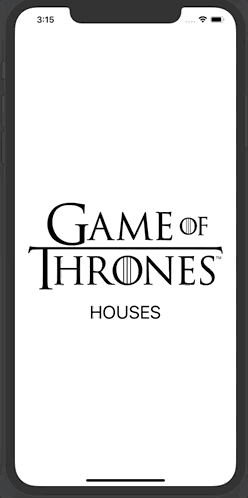
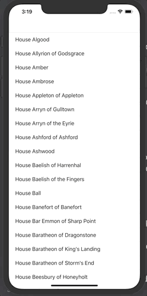
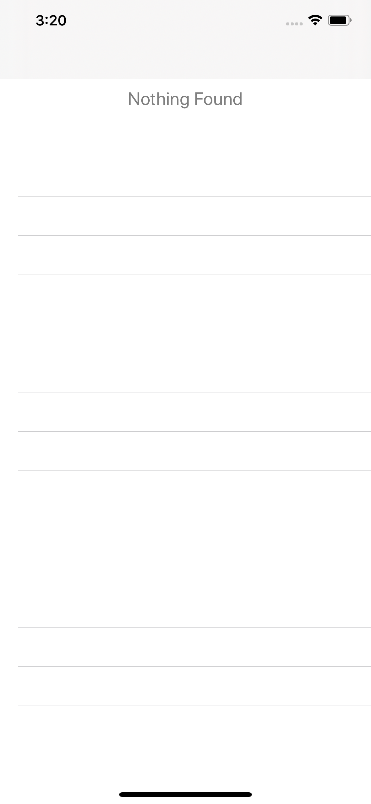

Game Of Thrones Houses App
Below is a demonstation of simple app that displays the uses an API to display the game of thrones houses in a table view.
App Demo
The user must tap on the splashscreen to view all Game of Throne houses
The user can tap on a house to view more details:

When the user scrolls to the bottom, more houses load:
In the case that the user's network connection is slow, they will see the loading cell:

and if there are no resuts returned, the user will see this (however this should never happen):
